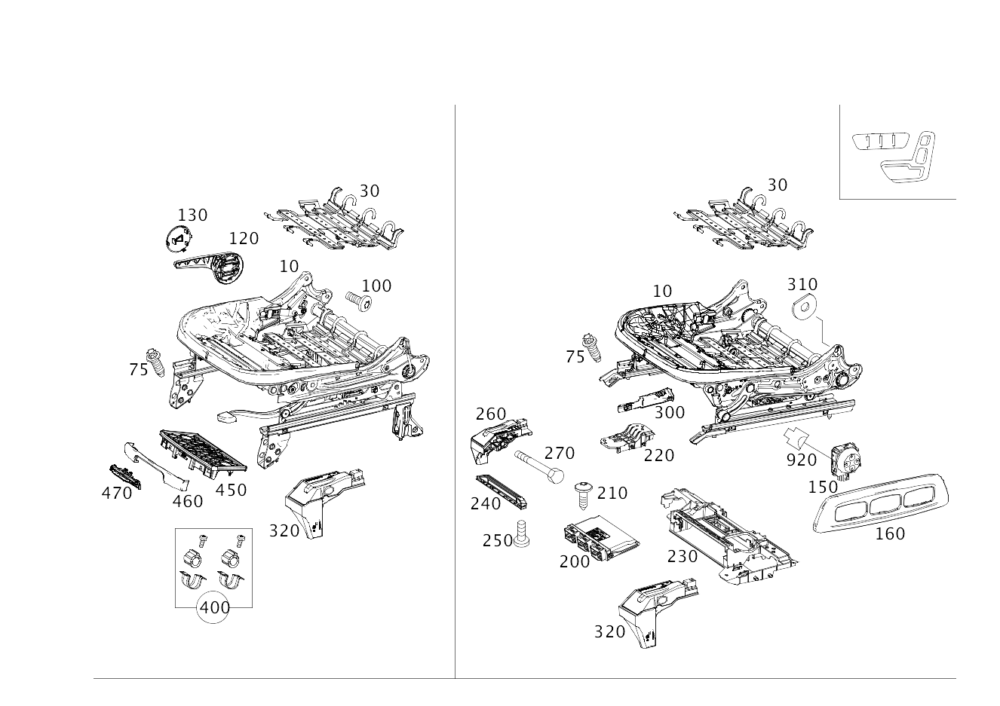

| № | Артикул | Название | Кол. | Примечание | Ограничение |
|---|---|---|---|---|---|
| 10 | A 000 910 67 08 | Механизм рег. по высоте. | 1 | РЕГУЛИРОВКА СИДЕНЬЯ СЛЕВА | (803/804/805/806+-140)+-(275/241/494/555/U59) |
| 10 | A 000 910 17 00 | Механизм рег. по высоте. | 1 | РЕГУЛИРОВКА СИДЕНЬЯ СЛЕВА | (803/804/805/806+-140)+(U59/555) |
| 10 | A 000 910 68 08 | Механизм рег. по высоте. | 1 | РЕГУЛИРОВКА СИДЕНЬЯ СЛЕВА | (803/804/805/806+-140)+(U59/555) |
| 10 | A 099 910 15 00 | Механизм рег. по высоте. | 1 | РЕГУЛИРОВКА СИДЕНЬЯ СЛЕВА | (806+140/807/808/809/800/801)+(U59/555) |
| 10 | A 000 910 47 10 | Механизм рег. по высоте. | 1 | РЕГУЛИРОВКА СИДЕНЬЯ СЛЕВА | 806+140/807/808/809/800/801 |
| 10 | A 000 910 66 08 | Механизм прод.регулировки | 1 | РЕГУЛИРОВКА СИД. СПРАВА Рулевое управление: Влево | (803/804/805/806+-140) |
| 10 | A 000 910 50 10 | Механизм прод.регулировки | 1 | РЕГУЛИРОВКА СИД. СПРАВА Рулевое управление: Влево | (806+140/807/808/809/800/801) |
| 10 | A 099 910 16 00 | Механизм рег. по высоте. | 1 | РЕГУЛИРОВКА СИД. СПРАВА Рулевое управление: Вправо | (806+140/807/808/809/800/801) |
| 10 | A 000 910 69 08 | Механизм рег. по высоте. | 1 | РЕГУЛИРОВКА СИД. СПРАВА Рулевое управление: Вправо | (803/804/805/806+-140) |
| 10 | A 000 910 69 08 | Механизм рег. по высоте. | 1 | РЕГУЛИРОВКА СИД. СПРАВА Рулевое управление: Вправо | (803/804/805/806+-140)+555 |
| 10 | A 000 910 69 08 | Механизм рег. по высоте. | 1 | РЕГУЛИРОВКА СИД. СПРАВА Рулевое управление: Влево | (803/804/805/806+-140)+(U59/555) |
| 10 | A 099 910 00 00 | Механизм рег. по высоте. | 1 | РЕГУЛИРОВКА СИД. СПРАВА Рулевое управление: Влево | (803/804/805/806+-140)+U59+(460/494) |
| 10 | A 099 910 16 00 | Механизм рег. по высоте. | 1 | РЕГУЛИРОВКА СИД. СПРАВА Рулевое управление: Влево | (806+140/807/808/809/800/801)+(U59/555) |
| 10 | A 000 910 43 04 | Механизм рег. по высоте. | 1 | РЕГУЛИРОВКА СИДЕНЬЯ СЛЕВА Рулевое управление: Влево | (803/804/805/806+-140)+275+(U59/555) |
| 10 | A 000 910 70 08 | Механизм рег. по высоте. | 1 | РЕГУЛИРОВКА СИДЕНЬЯ СЛЕВА Рулевое управление: Влево | (803/804/805/806+-140)+275+(U59/555) |
| 10 | A 000 910 43 04 | Механизм рег. по высоте. | 1 | РЕГУЛИРОВКА СИДЕНЬЯ СЛЕВА Рулевое управление: Вправо | (803/804/805/806+-140)+241+(U59/555) |
| 10 | A 000 910 70 08 | Механизм рег. по высоте. | 1 | РЕГУЛИРОВКА СИДЕНЬЯ СЛЕВА Рулевое управление: Вправо | (803/804/805/806+-140)+241+(U59/555) |
| 10 | A 000 910 38 10 | Механизм рег. по высоте. | 1 | РЕГУЛИРОВКА СИДЕНЬЯ СЛЕВА Рулевое управление: Влево | (806+140/807/808/809/800/801)+275+(U59/555) |
| 10 | A 000 910 38 10 | Механизм рег. по высоте. | 1 | РЕГУЛИРОВКА СИДЕНЬЯ СЛЕВА Рулевое управление: Вправо | (806+140/807/808/809/800/801)+241+(U59/555) |
| 10 | A 000 910 44 04 | Механизм рег. по высоте. | 1 | РЕГУЛИРОВКА СИД. СПРАВА Рулевое управление: Влево | (803/804/805/806+-140)+242+(U59/555) |
| 10 | A 000 910 71 08 | Механизм рег. по высоте. | 1 | РЕГУЛИРОВКА СИД. СПРАВА Рулевое управление: Влево | (803/804/805/806+-140)+242+(U59/555) |
| 10 | A 000 910 44 04 | Механизм рег. по высоте. | 1 | РЕГУЛИРОВКА СИД. СПРАВА Рулевое управление: Вправо | (803/804/805/806+-140)+275+(U59/555) |
| 10 | A 000 910 71 08 | Механизм рег. по высоте. | 1 | РЕГУЛИРОВКА СИД. СПРАВА Рулевое управление: Вправо | (803/804/805/806+-140)+275+(U59/555) |
| 10 | A 099 910 02 00 | Механизм рег. по высоте. | 1 | РЕГУЛИРОВКА СИД. СПРАВА Рулевое управление: Влево | (803/804/805+-055)+(242+U59+(460/494)) |
| 10 | A 000 910 83 08 | Механизм рег. по высоте. | 1 | РЕГУЛИРОВКА СИД. СПРАВА Рулевое управление: Влево | (805+055/806+-140)+(242+U59+(460/494)) |
| 10 | A 000 910 36 10 | Механизм рег. по высоте. | 1 | РЕГУЛИРОВКА СИД. СПРАВА Рулевое управление: Влево | (806+140/807/808/809/800/801)+U59+(460/494) |
| 10 | A 000 910 39 10 | Механизм рег. по высоте. | 1 | РЕГУЛИРОВКА СИД. СПРАВА Рулевое управление: Влево | (806+140/807/808/809/800/801)+242+(U59/555) |
| 10 | A 000 910 39 10 | Механизм рег. по высоте. | 1 | РЕГУЛИРОВКА СИД. СПРАВА Рулевое управление: Вправо | (806+140/807/808/809/800/801)+275+(U59/555) |
| 10 | A 000 910 44 10 | Механизм рег. по высоте. | 1 | РЕГУЛИРОВКА СИД. СПРАВА Рулевое управление: Влево | (806+140/807/808/809/800/801)+242+U59+(460/494) |
| 30 | A 000 914 17 00 | - Пружинный каркас подушки | 1 | СЛЕВА | |
| 30 | A 000 914 17 00 | - Пружинный каркас подушки | 1 | СПРАВА | |
| 75 | A 202 990 01 22 | Самонарезающий винт | 4 | КРЕПЛЕНИЕ СИДЕНЬЯ СЛЕВА К КАРКАСУ СИДЕНЬЯ; M10X28 | |
| 75 | A 202 990 01 22 | Самонарезающий винт | 4 | КРЕПЛЕНИЕ СИДЕНЬЯ СПРАВА К КАРКАСУ СИДЕНЬЯ; M10X28 | |
| 100 | A 140 984 47 29 | болт | 4 | СПИНКА НА РАМЕ СИДЕНЬЯ, СЛЕВА; M10X12 | |
| 100 | A 140 984 47 29 | болт | 4 | СПИНКА НА РАМЕ СИДЕНЬЯ, СПРАВА; M10X12 | |
| 120 | A 246 910 05 02 | Рычаг регулир. по высоте | 1 | РЕГУЛИРОВКА ВЫСОТЫ, ЛЕВОЕ СИДЕНЬЕ Рулевое управление: Влево | -275 |
| 120 | A 246 910 05 02 | Рычаг регулир. по высоте | 1 | РЕГУЛИРОВКА ВЫСОТЫ, ЛЕВОЕ СИДЕНЬЕ Рулевое управление: Вправо | -241 |
| 120 | A 246 910 06 02 | Рычаг регулир. по высоте | 1 | РЕГУЛИРОВКА ВЫСОТЫ, ПРАВОЕ СИДЕНЬЕ Рулевое управление: Влево | (U59/555)+-242 |
| 120 | A 246 910 06 02 | Рычаг регулир. по высоте | 1 | РЕГУЛИРОВКА ВЫСОТЫ, ПРАВОЕ СИДЕНЬЕ Рулевое управление: Вправо | 555+-275 |
| 120 | A 246 910 06 02 | Рычаг регулир. по высоте | 1 | РЕГУЛИРОВКА ВЫСОТЫ, ПРАВОЕ СИДЕНЬЕ Рулевое управление: Вправо | -275 |
| 130 | A 246 919 25 00 | Накладка механизма | 1 | МЕХАНИЗМ РЕГУЛИРОВКИ СИДЕНЬЯ ПО ВЫСОТЕ Рулевое управление: Влево | -275 |
| 130 | A 246 919 25 00 | Накладка механизма | 1 | МЕХАНИЗМ РЕГУЛИРОВКИ СИДЕНЬЯ ПО ВЫСОТЕ Рулевое управление: Вправо | -241 |
| 130 | A 246 919 25 00 | Накладка механизма | 1 | МЕХАНИЗМ РЕГУЛИРОВКИ СИДЕНЬЯ ПО ВЫСОТЕ Рулевое управление: Влево | (U59/555)+-242 |
| 130 | A 246 919 25 00 | Накладка механизма | 1 | МЕХАНИЗМ РЕГУЛИРОВКИ СИДЕНЬЯ ПО ВЫСОТЕ Рулевое управление: Вправо | 555+-275 |
| 130 | A 246 919 25 00 | Накладка механизма | 1 | МЕХАНИЗМ РЕГУЛИРОВКИ СИДЕНЬЯ ПО ВЫСОТЕ Рулевое управление: Вправо | -275 |
| 150 | A 205 905 76 03 | Блок выключателей | 1 | РЕГУЛИР. ПОЯСН. ПОДПОРА, ЛЕВ. СИДЕНЬЕ | U22/555+-(275/241) |
| 150 | A 205 905 78 03 | Блок выключателей | 1 | РЕГУЛИР. ПОЯСН. ПОДПОРА, ПРАВ. СИДЕНЬЕ | U22/555+-(275/242) |
| 150 | A 205 905 76 03 | Блок выключателей | 1 | РЕГУЛИР. ПОЯСН. ПОДПОРА, ЛЕВ. СИДЕНЬЕ Рулевое управление: Вправо | 555+275+241 |
| 150 | A 205 905 78 03 | Блок выключателей | 1 | РЕГУЛИР. ПОЯСН. ПОДПОРА, ПРАВ. СИДЕНЬЕ Рулевое управление: Влево | 555+275+242 |
| 150 | A 205 905 76 03 | Блок выключателей | 1 | РЕГУЛИР. ПОЯСН. ПОДПОРА, ЛЕВ. СИДЕНЬЕ Рулевое управление: Влево | 555+275 |
| 150 | A 205 905 78 03 | Блок выключателей | 1 | РЕГУЛИР. ПОЯСН. ПОДПОРА, ПРАВ. СИДЕНЬЕ Рулевое управление: Вправо | 555+275 |
| 150 | A 176 905 09 01 | - Блок выключателей | 1 | Слева Рулевое управление: Влево [402] БОЛЬШЕ НЕ ПОСТАВЛЯЕТСЯ | 555+242+U18 |
| 150 | A 176 905 10 01 | - Блок выключателей | 1 | Справа Рулевое управление: Влево [402] БОЛЬШЕ НЕ ПОСТАВЛЯЕТСЯ | 555+242+U18 |
| 160 | A 176 919 16 00 | Накладка механизма | 1 | Выключатель слева Рулевое управление: Влево | 555+275 |
| 160 | A 205 919 71 00 | Накладка механизма | 1 | Выключатель слева Рулевое управление: Влево | 555+275 |
| 160 | A 176 919 16 00 | Накладка механизма | 1 | Выключатель слева Рулевое управление: Влево | 555+275 |
| 160 | A 176 919 17 00 | - Накладка механизма | 1 | Выключатель слева Рулевое управление: Вправо | 555+241+U18 |
| 160 | A 176 919 16 00 | Накладка механизма | 1 | Выключатель справа Рулевое управление: Вправо | 555+275 |
| 160 | A 205 919 71 00 | Накладка механизма | 1 | Выключатель справа Рулевое управление: Вправо | 555+275 |
| 160 | A 176 919 16 00 | Накладка механизма | 1 | Выключатель справа Рулевое управление: Вправо | 555+275 |
| 160 | A 176 919 16 00 | Накладка механизма | 1 | Выключатель слева Рулевое управление: Вправо | 555+241 |
| 160 | A 205 919 71 00 | Накладка механизма | 1 | Выключатель слева Рулевое управление: Вправо | 555+241 |
| 160 | A 176 919 16 00 | Накладка механизма | 1 | Выключатель слева Рулевое управление: Вправо | 555+241 |
| 160 | A 176 919 17 00 | - Накладка механизма | 2 | Выключатель слева Рулевое управление: Вправо | 555+U10+241 |
| 160 | A 176 919 16 00 | Накладка механизма | 1 | Выключатель справа Рулевое управление: Влево | 555+242 |
| 160 | A 205 919 71 00 | Накладка механизма | 1 | Выключатель справа Рулевое управление: Влево | 555+242 |
| 160 | A 176 919 16 00 | Накладка механизма | 1 | Выключатель справа Рулевое управление: Влево | 555+242 |
| 160 | A 176 919 17 00 | Накладка механизма | 1 | Выключатель справа Рулевое управление: Влево | 555+U10+242 |
| 160 | A 176 919 17 00 | Накладка механизма | 1 | Выключатель справа Рулевое управление: Влево | (804/805/806/807)+555+U10+242 |
| 160 | A 205 919 73 00 | Накладка механизма | 1 | Выключатель справа Рулевое управление: Влево | (808/809)+555+U10+242 |
| 160 | A 176 919 17 00 | Накладка механизма | 2 | Выключатель справа Рулевое управление: Влево | 555+242+U18 |
| 200 | A 246 820 05 26 | ЭБУ подогрева сиденья | 1 | ЛЕВОЕ СИДЕНЬЕ Рулевое управление: Влево [672] ДЕТАЛЬ ПОСЛЕ УСТАН.ПРОВЕРИТЬ НА АКТУАЛЬНОСТЬ "ПРОШИВНОГО" ПО [697] ДЕТАЛЬ ПОСТАВЛЯЕТСЯ ТОЛЬКО/ИЛИ ТАКЖЕ КАК ЗАП.ЧАСТЬ | (873)+-(555) |
| 200 | A 246 820 05 26 | ЭБУ подогрева сиденья | 1 | ПРАВОЕ СИДЕНЬЕ Рулевое управление: Вправо [672] ДЕТАЛЬ ПОСЛЕ УСТАН.ПРОВЕРИТЬ НА АКТУАЛЬНОСТЬ "ПРОШИВНОГО" ПО [697] ДЕТАЛЬ ПОСТАВЛЯЕТСЯ ТОЛЬКО/ИЛИ ТАКЖЕ КАК ЗАП.ЧАСТЬ | 873+-555 |
| 200 | A 166 900 60 07 | Блок управления | 1 | ЛЕВОЕ СИДЕНЬЕ Рулевое управление: Влево [672] ДЕТАЛЬ ПОСЛЕ УСТАН.ПРОВЕРИТЬ НА АКТУАЛЬНОСТЬ "ПРОШИВНОГО" ПО [697] ДЕТАЛЬ ПОСТАВЛЯЕТСЯ ТОЛЬКО/ИЛИ ТАКЖЕ КАК ЗАП.ЧАСТЬ | (275/275+873)+-555 |
| 200 | A 166 900 85 06 | Блок управления | 1 | ЛЕВОЕ СИДЕНЬЕ Рулевое управление: Влево [672] ДЕТАЛЬ ПОСЛЕ УСТАН.ПРОВЕРИТЬ НА АКТУАЛЬНОСТЬ "ПРОШИВНОГО" ПО | (275/275+873)+-555 |
| 200 | A 166 900 60 07 | Блок управления | 1 | ПРАВОЕ СИДЕНЬЕ Рулевое управление: Вправо [672] ДЕТАЛЬ ПОСЛЕ УСТАН.ПРОВЕРИТЬ НА АКТУАЛЬНОСТЬ "ПРОШИВНОГО" ПО [697] ДЕТАЛЬ ПОСТАВЛЯЕТСЯ ТОЛЬКО/ИЛИ ТАКЖЕ КАК ЗАП.ЧАСТЬ | (275/275+873)+-(555) |
| 200 | A 166 900 85 06 | Блок управления | 1 | ПРАВОЕ СИДЕНЬЕ Рулевое управление: Вправо [672] ДЕТАЛЬ ПОСЛЕ УСТАН.ПРОВЕРИТЬ НА АКТУАЛЬНОСТЬ "ПРОШИВНОГО" ПО | (275/275+873)+-(555) |
| 200 | A 246 820 05 26 | ЭБУ подогрева сиденья | 1 | ЛЕВОЕ СИДЕНЬЕ Рулевое управление: Вправо [672] ДЕТАЛЬ ПОСЛЕ УСТАН.ПРОВЕРИТЬ НА АКТУАЛЬНОСТЬ "ПРОШИВНОГО" ПО [697] ДЕТАЛЬ ПОСТАВЛЯЕТСЯ ТОЛЬКО/ИЛИ ТАКЖЕ КАК ЗАП.ЧАСТЬ | (873+275)+-(555) |
| 200 | A 246 820 05 26 | ЭБУ подогрева сиденья | 1 | ПРАВОЕ СИДЕНЬЕ Рулевое управление: Влево [672] ДЕТАЛЬ ПОСЛЕ УСТАН.ПРОВЕРИТЬ НА АКТУАЛЬНОСТЬ "ПРОШИВНОГО" ПО [697] ДЕТАЛЬ ПОСТАВЛЯЕТСЯ ТОЛЬКО/ИЛИ ТАКЖЕ КАК ЗАП.ЧАСТЬ | (873+275)+-555 |
| 200 | A 166 900 61 07 | Блок управления | 1 | ЛЕВОЕ СИДЕНЬЕ Рулевое управление: Вправо [672] ДЕТАЛЬ ПОСЛЕ УСТАН.ПРОВЕРИТЬ НА АКТУАЛЬНОСТЬ "ПРОШИВНОГО" ПО | (241+275)+-(555) |
| 200 | A 166 900 86 06 | Блок управления | 1 | ЛЕВОЕ СИДЕНЬЕ Рулевое управление: Вправо [672] ДЕТАЛЬ ПОСЛЕ УСТАН.ПРОВЕРИТЬ НА АКТУАЛЬНОСТЬ "ПРОШИВНОГО" ПО [697] ДЕТАЛЬ ПОСТАВЛЯЕТСЯ ТОЛЬКО/ИЛИ ТАКЖЕ КАК ЗАП.ЧАСТЬ | (241/241+873)+275+-(555) |
| 200 | A 166 900 61 07 | Блок управления | 1 | ПРАВОЕ СИДЕНЬЕ Рулевое управление: Влево [672] ДЕТАЛЬ ПОСЛЕ УСТАН.ПРОВЕРИТЬ НА АКТУАЛЬНОСТЬ "ПРОШИВНОГО" ПО | (242+275)+-(555) |
| 200 | A 166 900 86 06 | Блок управления | 1 | ПРАВОЕ СИДЕНЬЕ Рулевое управление: Влево [672] ДЕТАЛЬ ПОСЛЕ УСТАН.ПРОВЕРИТЬ НА АКТУАЛЬНОСТЬ "ПРОШИВНОГО" ПО [697] ДЕТАЛЬ ПОСТАВЛЯЕТСЯ ТОЛЬКО/ИЛИ ТАКЖЕ КАК ЗАП.ЧАСТЬ | ((242/242+873)+275)+-(555) |
| 200 | A 246 820 05 26 | ЭБУ подогрева сиденья | 1 | ЛЕВОЕ СИДЕНЬЕ Рулевое управление: Влево [672] ДЕТАЛЬ ПОСЛЕ УСТАН.ПРОВЕРИТЬ НА АКТУАЛЬНОСТЬ "ПРОШИВНОГО" ПО [697] ДЕТАЛЬ ПОСТАВЛЯЕТСЯ ТОЛЬКО/ИЛИ ТАКЖЕ КАК ЗАП.ЧАСТЬ | 555+873 |
| 200 | A 246 820 05 26 | ЭБУ подогрева сиденья | 1 | ПРАВОЕ СИДЕНЬЕ Рулевое управление: Вправо [672] ДЕТАЛЬ ПОСЛЕ УСТАН.ПРОВЕРИТЬ НА АКТУАЛЬНОСТЬ "ПРОШИВНОГО" ПО [697] ДЕТАЛЬ ПОСТАВЛЯЕТСЯ ТОЛЬКО/ИЛИ ТАКЖЕ КАК ЗАП.ЧАСТЬ | 555+873 |
| 200 | A 166 900 60 07 | Блок управления | 1 | ПРАВОЕ СИДЕНЬЕ Рулевое управление: Вправо [672] ДЕТАЛЬ ПОСЛЕ УСТАН.ПРОВЕРИТЬ НА АКТУАЛЬНОСТЬ "ПРОШИВНОГО" ПО [697] ДЕТАЛЬ ПОСТАВЛЯЕТСЯ ТОЛЬКО/ИЛИ ТАКЖЕ КАК ЗАП.ЧАСТЬ | 555+(275/275+873) |
| 200 | A 166 900 85 06 | Блок управления | 1 | ПРАВОЕ СИДЕНЬЕ Рулевое управление: Вправо [672] ДЕТАЛЬ ПОСЛЕ УСТАН.ПРОВЕРИТЬ НА АКТУАЛЬНОСТЬ "ПРОШИВНОГО" ПО | 555+(275/275+873) |
| 200 | A 166 900 60 07 | Блок управления | 1 | ЛЕВОЕ СИДЕНЬЕ Рулевое управление: Влево [672] ДЕТАЛЬ ПОСЛЕ УСТАН.ПРОВЕРИТЬ НА АКТУАЛЬНОСТЬ "ПРОШИВНОГО" ПО [697] ДЕТАЛЬ ПОСТАВЛЯЕТСЯ ТОЛЬКО/ИЛИ ТАКЖЕ КАК ЗАП.ЧАСТЬ | 555+(275/275+873) |
| 200 | A 166 900 85 06 | Блок управления | 1 | ЛЕВОЕ СИДЕНЬЕ Рулевое управление: Влево [672] ДЕТАЛЬ ПОСЛЕ УСТАН.ПРОВЕРИТЬ НА АКТУАЛЬНОСТЬ "ПРОШИВНОГО" ПО | 555+(275/275+873) |
| 200 | A 246 820 05 26 | ЭБУ подогрева сиденья | 1 | ЛЕВОЕ СИДЕНЬЕ Рулевое управление: Вправо [672] ДЕТАЛЬ ПОСЛЕ УСТАН.ПРОВЕРИТЬ НА АКТУАЛЬНОСТЬ "ПРОШИВНОГО" ПО [697] ДЕТАЛЬ ПОСТАВЛЯЕТСЯ ТОЛЬКО/ИЛИ ТАКЖЕ КАК ЗАП.ЧАСТЬ | 555+275+873 |
| 200 | A 246 820 05 26 | ЭБУ подогрева сиденья | 1 | ПРАВОЕ СИДЕНЬЕ Рулевое управление: Влево [672] ДЕТАЛЬ ПОСЛЕ УСТАН.ПРОВЕРИТЬ НА АКТУАЛЬНОСТЬ "ПРОШИВНОГО" ПО [697] ДЕТАЛЬ ПОСТАВЛЯЕТСЯ ТОЛЬКО/ИЛИ ТАКЖЕ КАК ЗАП.ЧАСТЬ | 555+275+873 |
| 200 | A 166 900 61 07 | Блок управления | 1 | ПРАВОЕ СИДЕНЬЕ Рулевое управление: Влево [672] ДЕТАЛЬ ПОСЛЕ УСТАН.ПРОВЕРИТЬ НА АКТУАЛЬНОСТЬ "ПРОШИВНОГО" ПО | 555+(275/275+873)+242 |
| 200 | A 166 900 86 06 | Блок управления | 1 | ПРАВОЕ СИДЕНЬЕ Рулевое управление: Влево [672] ДЕТАЛЬ ПОСЛЕ УСТАН.ПРОВЕРИТЬ НА АКТУАЛЬНОСТЬ "ПРОШИВНОГО" ПО [697] ДЕТАЛЬ ПОСТАВЛЯЕТСЯ ТОЛЬКО/ИЛИ ТАКЖЕ КАК ЗАП.ЧАСТЬ | 555+(275/275+873)+242 |
| 200 | A 166 900 61 07 | Блок управления | 1 | ЛЕВОЕ СИДЕНЬЕ Рулевое управление: Вправо [672] ДЕТАЛЬ ПОСЛЕ УСТАН.ПРОВЕРИТЬ НА АКТУАЛЬНОСТЬ "ПРОШИВНОГО" ПО | 555+(275/275+873)+241 |
| 200 | A 166 900 86 06 | Блок управления | 1 | ЛЕВОЕ СИДЕНЬЕ Рулевое управление: Вправо [672] ДЕТАЛЬ ПОСЛЕ УСТАН.ПРОВЕРИТЬ НА АКТУАЛЬНОСТЬ "ПРОШИВНОГО" ПО [697] ДЕТАЛЬ ПОСТАВЛЯЕТСЯ ТОЛЬКО/ИЛИ ТАКЖЕ КАК ЗАП.ЧАСТЬ | 555+(275/275+873)+241 |
| 210 | N 000000 000528 | Шуруп | 2 | КРЕПЛЕНИЕ БУ, СЛЕВА; 4.8X16 | |
| 210 | N 000000 000528 | Шуруп | 2 | КРЕПЛЕНИЕ БУ, СПРАВА; 4.8X16 | |
| 220 | A 246 919 29 00 | Держатель | 1 | КОНТАКТН. ПЛАНКА СО СТОРОНЫ ПЕРЕДН. ПАСС. | -(241/(873+275)/555+(241/873+275)) |
| 220 | A 246 919 29 00 | Держатель | 1 | КОНТАКТН. ПЛАНКА СО СТОРОНЫ ПЕРЕДН. ПАСС. | 555 |
| 220 | A 246 919 30 00 | Держатель | 1 | КОНТАКТН. ПЛАНКА СО СТОРОНЫ ПЕРЕДН. ПАСС. | |
| 220 | A 246 919 30 00 | Держатель | 1 | КОНТАКТ. ПЛАНКА СО СТОРОНЫ ВОДИТЕЛЯ | 555 |
| 230 | A 000 911 04 75 | Пластина крепления | 1 | КОНТАКТ. ПЛАНКА СО СТОРОНЫ ВОДИТЕЛЯ Рулевое управление: Влево | 275/873/555+(275/873) |
| 230 | A 000 911 05 75 | Пластина крепления | 1 | КОНТАКТН. ПЛАНКА СО СТОРОНЫ ПЕРЕДН. ПАСС. Рулевое управление: Вправо | 275/873/555+(275/873) |
| 230 | A 000 911 05 75 | Пластина крепления | 1 | КОНТАКТН. ПЛАНКА СО СТОРОНЫ ПЕРЕДН. ПАСС. Рулевое управление: Влево | 242/(873+275)/555+(242/873+275) |
| 230 | A 000 911 04 75 | Пластина крепления | 1 | КОНТАКТ. ПЛАНКА СО СТОРОНЫ ВОДИТЕЛЯ Рулевое управление: Вправо | 241/(873+275)/555+(241/873+275) |
| 240 | A 246 910 43 00 | Направляющая сиденья | 1 | 460/494/555+(460/494) | |
| 250 | A 001 984 64 29 | Болт с головкой торкс | 1 | КРЕПЛЕНИЕ ПЛАНКИ; 5X16 | 460/494/555+(460/494) |
| 260 | A 246 905 05 01 | Датчик Холла | 1 | 460/494/555+(460/494) | |
| 260 | A 453 905 09 00 | Датчик Холла | 1 | 460/494/555+(460/494) | |
| 270 | A 001 984 66 29 | Болт с головкой торкс | 1 | НА ДАТЧИКЕ; 5X30 | 460/494/555+(460/494) |
| 310 | A 176 911 00 00 | Усиливающий элемент | 2 | СПЕРЕДИ СЛЕВА Рулевое управление: Влево | 555+275 |
| 310 | A 176 911 00 00 | Усиливающий элемент | 2 | СПЕРЕДИ СПРАВА Рулевое управление: Вправо | 555+275 |
| 310 | A 176 911 00 00 | Усиливающий элемент | 2 | СПЕРЕДИ СЛЕВА Рулевое управление: Вправо | 555+241 |
| 310 | A 176 911 00 00 | Усиливающий элемент | 2 | СПЕРЕДИ СПРАВА Рулевое управление: Влево | 555+242 |
| 320 | A 453 905 09 00 | Датчик Холла | 1 | СТОРОНА ПЕРЕДНЕГО ПАССАЖИРА | 555+(460/494) |
| 400 | A 000 910 25 05 | Комплект крепежной скобы | 1 | ЛЕВОЕ СИДЕНЬЕ | U59 |
| 400 | A 000 910 25 05 | Комплект крепежной скобы | 1 | ПРАВОЕ СИДЕНЬЕ | U59 |
| 450 | A 176 910 97 04 | Направляющая | 1 | РЕГУЛИРОВКА СИДЕНЬЯ, СЛЕВА | (806+140/807/808/809/800)+(555/U59) |
| 450 | A 176 910 73 06 | Направляющая | 1 | РЕГУЛИРОВКА СИДЕНЬЯ, СЛЕВА | (806+140/807/808/809/800)+(555/U59) |
| 450 | A 176 910 97 04 | Направляющая | 1 | РЕГУЛИРОВКА СИД., СПРАВА | (806+140/807/808/809/800)+(555/U59) |
| 450 | A 176 910 73 06 | Направляющая | 1 | РЕГУЛИРОВКА СИД., СПРАВА | (806+140/807/808/809/800)+(555/U59) |
| 460 | A 176 919 23 00 | Накладка механизма | 1 | РЕГУЛИРОВКА СИДЕНЬЯ, СЛЕВА | (806+140/807/808/809/800)+(555/U59) |
| 460 | A 176 919 23 00 | Накладка механизма | 1 | РЕГУЛИРОВКА СИД., СПРАВА | (806+140/807/808/809/800)+(555/U59) |
| 470 | A 176 919 19 00 | Ручка | 1 | РЕГУЛИРОВКА СИДЕНЬЯ, СЛЕВА | (806+140/807/808/809/800)+(555/U59) |
| 470 | A 176 919 19 00 | Ручка | 1 | РЕГУЛИРОВКА СИД., СПРАВА | (806+140/807/808/809/800)+(555/U59) |
| 920 | A 038 545 12 28 | Сцепление, механическое | 1 | ПЕРЕКЛЮЧАТЕЛЬ РЕГУЛИРОВКИ ПОЯСНИЧНОЙ ПОДДЕРЖКИ СИДЕНЬЯ ВОДИТЕЛЯ S109/2; 4\-PIN MQS | |
| 920 | A 038 545 12 28 | Сцепление, механическое | 1 | ПЕРЕКЛЮЧАТЕЛЬ РЕГУЛИРОВКИ ПОЯСНИЧНОЙ ПОДДЕРЖКИ СИДЕНЬЯ ПЕРЕДНЕГО ПАССАЖИРА S109/3; 4\-PIN MQS |
Позиций: 127 · подписано на схемах: 127 · колесо — плавный зум в курсор, перетаскивание — пан, двойной клик — зум, клик по артикулу — скопировать · наведите на строку или цифру на схеме — подсветка связки, клик — закрепить.